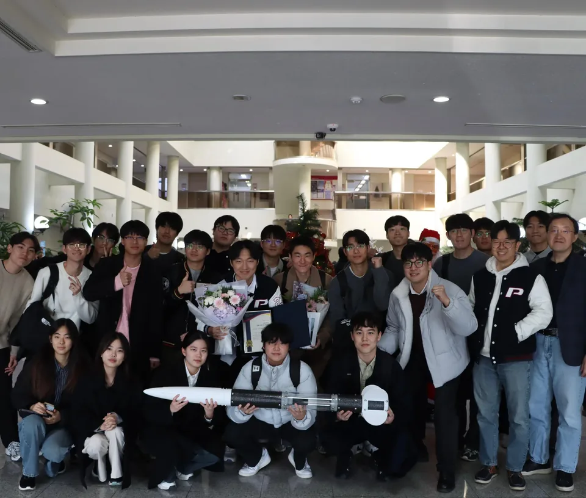

갤러리
현장의 기록, 직접 만든 기체, 그리고 PSI의 사람들.6개 앨범 · 사진 14장
로켓과 함께
사진 1장 / PSI
발사일
사진 5장 / PSI


학부 POSTECHIAN상 수상
사진 1장 / PSI

NURA 제작과 현장 준비
기체 점검과 현장 준비의 기록입니다. 활동 아카이브에서 2025년 8월로 분류한 사진이며, 정확한 촬영일은 확인되지 않았습니다.
사진 4장 / PSI


NURA 로켓학술대회
행사 현수막에서 확인한 학술대회 일정입니다.
사진 1장 / PSI
시험 준비와 팀 활동
시험 장치의 조립과 점검, 함께한 팀의 모습입니다. 연소 결과 사진이 아닌 준비 기록이며 활동 아카이브의 월별 분류를 따릅니다.
사진 2장 / PSI

PSI 아카이브의 사진입니다.